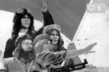
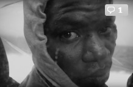

| Arte y letras | Ciencia | Cine-TV | Deportes | Entrevistas | Música |
|---|
|  | Así veia la música pop a China Cuando la música pop se consolidó en la segunda mitad del siglo XX, no podía imaginarse nada más alejado de ella que la cultura china. El rock & roll celebrada el resplandor de la Norteamérica vencedora tras la guerra. Por primera vez el adolescente se convertía en objetivo de cara al consumo, y caí rendido antes una oferta que incluía [...] |
|
| Sentarse en el Trono de Hierro: el poder regio en Juego de tronos desde una perspectiva medieval (Este artículo contiene SPOILERS. dela historia medieval también) En una cita muy célebre, el obispo Abalberón de Laon (+1030/1031) dividía la sociedad medieval en tres grupos u órdenes: los que rezan (oratores), los que luchan (bellatores) y los que trabajan (laboratores). Esa división, aunque simplificadora y destinada a justificar el orden social existente, sigue la más usada para [...] |
|
|  | Desnudando "Fuego en el mar" con Gianfranco Rosi Fuego en el mar es el documental sobre los refugiados de Lampedusa que Meryl Streep calificó, cuando le concedió el Oso de Oro de Berlín, de "cine urgente y necesario". Esto podría llevarnos a pensar que estamos frente a un reportaje como tantos otros, como Astral de Jordi Évole, pero nada más lejos: Fuego en el mar es un gran [...] |
|
| Copyright © 2016--Jot Down Cultural Magazine.Todos los derechos reservados |